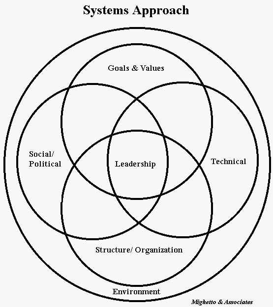

A systems approach is a way of thinking about complex human endeavors. According to Kast and Rosenzweig's Organization and Management: A Systems and Contingency Approach from McGraw-Hill (1970) , a systems approach facilitates recognition of the context within which the organization operates and emphasizes understanding the interrelationships among the various activities that are required to accomplish goals. The organization can be viewed as composed of several major subsystems.

The technical subsystem refers to the knowledge required for the performance of tasks. Organizational technology means the transformation of inputs into outputs. The technical subsystem is determined by the purposes of the business and will vary according to task requirements.
The social/political subsystem consists of individual behavior and motivation, status and role relationships, group dynamics, and influence networks.
Intermixed with technical and social/political subsystems is structure. Structure is concerned with the ways in which the tasks of the organization are divided and with the coordination of these activities. In a formal sense, structure can be set forth by organization charts, job descriptions, floor diagrams, and rules and procedures. It is concerned with patterns of authority, communication and work flow.
Goals and values represent one of the more important subsystems. While the organization takes
many of its values from society at large, it also influences societal values.
For more information
|
|
|
|
|
Mighetto & Associates - 1260 NE 69th St. Seattle, WA 98115 - (206) 525-1458 voice and fax
mighetto@eskimo.com - Internet email address
mighetto@compuserve.com - Internet email address or 72154,3467 from within Compuserve
http://www.eskimo.com/~mighetto/lssys.htm last updated September 10, 1999